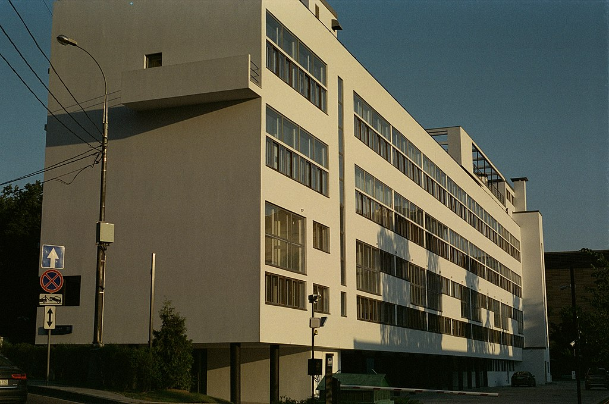

Дом Наркомфина
Материал из Википедии — свободной энциклопедии
Текущая версия страницы пока не проверялась опытными участниками и может значительно отличаться от версии, проверенной 10 октября 2022 года; проверки требуют 3 правки.
История создания дома Наркомфина
ОСА и Стройком
Из всех различных индивидуумов и групп, занимавшихся реформированием повседневной жизни и консолидации социализма в 1920-е годы архитекторы занимали исключительное положение. Архитектурная инновация Дома Коммуны представляет наиболее полную попытку осуществления реформирования быта и консолидации советского социализма. Самой влиятельной группой архитекторов в этой области являлась ОСА (Объединение Современных Архитекторов, возглавляемая М. Я. Гинзбургом). В то время как прочие реформаторы быта пытались внедрить реформистские практики в остатки существующих дореволюционных форм, группа ОСА (образована в 1925 году М. Я. Гинзбургом и братьями Весниными), более известная как конструктивисты, пыталась решить проблему «нового быта» напрямую созданием принципиально новой архитектуры и материальной культуры, основанных на коммунистических отношениях производства и потребления.
Дом Наркомфина, или 2-й дом Совнаркома (СНК) РСФСР стал одним из экспериментальных домов, построенных по результатам теоретических исследований Секции типизации Стройкома РСФСР, созданной по инициативе М. Я. Гинзбурга и работавшей под его руководством в 1928—1929 годы (в работе также участвовали входившие в объединение ОСА: М. О. Барщ, В. Н. Владимиров, А. Л. Пастернак, Г. Р. Сум-Шик). Задачей Стройкома являлось разработка и проектирование новых форм жилья для нового советского общества. Как сказано в монографии Йоганнеса Крамера «Das Narkomfin Kommunehaus In Moskau 1928—2012», «аналогичные устремления существовали в то же время и в Германии, где этими вопросами занимался Исследовательский институт экономической эффективности в строительстве и жилищном хозяйстве (RfG), хотя полученные им результаты были менее радикальными и менее призрачными».
Учреждению секции предшествовала работа в 1928 году комиссии Стройкома по отбору типовых проектов жилья для строительства. Комиссия пришла к выводу, что большинство известных на тот момент проектов не могут быть использованы как типовые, поэтому для разработки типовых проектов была создана Секция типизации. Подготовкой для работы над новым форматом жилья также стала работа над домом Госстраха на Малой Бронной (1926—1927, М. Я. Гинзбург и В. Н. Владимиров) и конкурс на «эскизный проект жилого дома трудящихся», проведённый журналом «Современная архитектура» (Гинзбург подал на конкурс проект «Коммунального дома А-1»). Выставка проектов конкурса состоялась в июне 1927 года.
Результаты исследования секции М. Я. Гинзбург доложил на пленуме Стройкома РСФСР, где было принято постановление, рекомендовавшее несколько разработанных жилых ячеек к массовому строительству, а остальные — к опытно-показательному, начиная с 1928 года. Согласно этому постановлению было построено шесть «экспериментальных коммунальных домов переходного типа» в Москве, Свердловске и Саратове. Все они служили для проверки результатов теоретических исследований Секции типизации и были созданы в рамках финансируемой государством программы экспериментального строительства 1929 года. Как пишет профессор МАрхИ Елена Овсянникова: «Тем не менее, нашёлся реальный заказчик на проведение в жизнь эксперимента Стройкома. Им стал Н. А. Милютин, тогда нарком финансов РСФСР». Проект дома Наркомфина создан в 1928—1929 годы, строительство велось в 1929—1930 годы.
С. О. Хан-Магомедов называет дом Наркомата финансов самым интересным из этих шести экспериментальных домов.
Сотрудничество М. Я. Гинзбурга и Н. А. Милютина
Заказчиком жилого комплекса выступал нарком финансов РСФСР (1924—1929) Н. А. Милютин, известный как автор схем социалистического расселения и градостроительных концепций соцгорода, он же определил функциональные характеристики будущего здания. Сотрудничество наркома Н. А. Милютина и архитектора М. Я. Гинзбурга началось несколько раньше, на строительстве дома Госстраха (1926—1927), — Милютин был инициатором строительства двух домов Госстраха в Москве. Идеи Н. А. Милютина об устройстве жилища воплотились при создании дома Наркомфина (Дома-парохода, или 2-го дома СНК).
По теории Милютина, «значительное повышение жизненного уровня рабочих и развитие обобществлённых форм обслуживания бытовых нужд трудящихся (общественное питание, ясли, детские сады, клубы и т. п.) постепенно уничтожают значение семьи как хозяйственного соединения. Этот процесс неизбежно приведёт, в конечном счёте, к полной переделке семейных форм общежития. <…> Задача раскрепощения женщины от мелкого домашнего хозяйства и вовлечение её в производство заставляет нас ставить вопрос о всемерном содействии этому процессу».
Цель реконструкции быта («новый быт») — ликвидация домашнего хозяйства и семейного уклада жизни, — возможность использовать женщин в качестве рабочей силы на производстве. Эта мысль в «Соцгороде» Милютина выражена вполне отчётливо. Идея «раскрепощения женщины» путём отлучения её от домашнего хозяйства и вовлечения в производственную деятельность («приобщения её к общественно-производственному труду») не была изобретением Милютина. Это была правительственная установка, выраженная в Постановлении ЦК ВКП (б) от 15 апреля 1929 года:
«Усиление влияния промышленных работниц на широкие массы трудящихся женщин, рост активности работниц, поднятие их классового самосознания и культурного уровня требуют дальнейшего увеличения женского труда на производстве. Принятый пятилетний план народного хозяйства обеспечивает огромный рост промышленности на базе реконструкции и социалистической рационализации, которая в отличие от капиталистической рационализации, основанной на эксплуатации рабочей силы, даёт возможность без ущерба для функций материнства расширять применение женского труда в производстве, в том числе и в тяжёлой индустрии. В связи с эти ЦК считает необходимым, чтобы соответствующие советские организации (Госплан, НКТ, ВСНХ и профсоюзы) обеспечили проведение в жизнь предусмотренное в пятилетнем плане вовлечение во все отрасли промышленности женской рабочей силы, приспособив к этому и план её подготовки, обеспечивая неуклонный рост количества женщин во всех звеньях по подготовке квалифицированной рабочей силы, ФЗУ, вечерние курсы, втузы»
Задача реализации этих принципов и была поставлена перед авторами проекта. Согласно Е. Милютиной, это был дом «нового быта».
Сметная стоимость строительства составила 10 млн рублей. Строительство жилого корпуса осуществлялось под наблюдением комиссии, возглавляемой Н. А. Милютиным. Коммунальный корпус и корпус прачечной строились без утверждённых чертежей.
Идеология «опытного коммунального дома переходного типа»

Архитектор Моисей Гинзбург. Фото М. С. Наппельбаума (1930-е годы)
Идеи, связанные с планировочной и объёмной структурой, также как и с функциональным наполнением дома, изложены в публикациях журнала «Современная архитектура», докладе М. Я. Гинзбурга на пленуме Стройкома, а также в его книге «Жилище».
Секция типизации Стройкома РСФСР ставила перед собой задачи разработки экономичного решения проблемы жилья без потери его качества и даже с повышением комфорта, в частности, благодаря естественному освещению не только жилых, но и подсобных зон, в т. ч. коридоров.

Внешние изображения
Дом Наркомфина переходного типа (от «буржуазного дома» к «социалистической коммуне») хотя и содержал в себе ранее существовавшие «буржуазные» квартиры (ячейки K и 2F), был структурирован таким образом, чтобы облегчить переход индивида к полностью социализированной жизни (в ячейках F).
Гинзбург критически оценивал так называемое моссоветовское строительство («массовое жилищное строительство Москвы первых лет после революции»), считал «экономический эффект» доходного дома более высоким. Поэтому работа Секции началась с анализа типологии «дореволюционного «доходного дома» и её оптимизации. Авторы сохраняли объём и высоту жилых помещений, урезая как площадь, так и высоту подсобных. Были удалены вторые лестницы и комнаты домработниц, уменьшены передние, ванные, спальни и кухни, причём последние как по площади, так и в высоту. «Уплотнение» подсобных зон компенсировалось большей высотой хорошо освещённых гостиных. Рассчитывались пропорции квартир, оптимальные траектории движения человека внутри и схемы эффективной расстановки мебели. Приведённые в книге расчёты эффективности использования жилого пространства построены на рассмотрении отношения кубатуры к жилой площади квартир и параметра k (k=W/P, соотношение общей кубатуры здания к полезной площади жилых ячеек).
Секция Стройкома разработала несколько типов квартир-ячеек разного размера, названных буквами от A до F, причём в маленьких ячейках F размещалась душевая кабина, в больших ячейках А ванна. Также был разработан «кухонный элемент» сокращённой площади, закрывающийся складной дверью-ширмой. Кухонные элементы были реализованы в доме на Гоголевском бульваре. Почти все созданные тематические жилые дома так называемого «переходного типа», предусматривали наличие завершённых индивидуальных квартир-ячеек и коммунальных зон для постепенного перехода к новому коллективному образу жизни.
Одной из ключевых позиций М. Я. Гинзбурга было создание изолированных квартир для отдельных семей: «Архитекторы Секции типизации пришли к выводу, что в условиях тех лет решение жилищной проблемы неотделимо от разработки типовых проектов экономичной малометражной (в первую очередь однокомнатной) квартиры для отдельных семей. Гинзбург рассматривал жилую ячейку будущего как предельно ужатую и экономную, но традиционную по структуре квартиру на одну семью. Пусть даже однокомнатную, но с индивидуальными кухней и ванной. В этом Гинзбург и его сотрудники-единомышленники были согласны с европейскими архитекторами, решавшими те же задачи, — Ле Корбюзье, Эрнстом Маем, Бруно Таутом, Ханнесом Майером.
В работе Секции Стройкома, как и в выступлениях М. Я. Гинзбурга, отразилась борьба идеи экономичного, но комфортного дома с отдельными квартирами и общественным сервисом — с развивавшейся параллельно в тот же период идеей дома-коммуны (того же Стройкома) с полным обобществлением быта. М. Я. Гинзбург противопоставлял свой «коммунальный дом переходного типа» практике домов-коммун и жёстко критиковал последнюю. По словам М. Я. Гинзбурга, «коммунальный дом» должен «способствовать быстрейшему безболезненному переходу к более высоким формам хозяйства». Именно для этого был запланирован развитый коммунальный блок с функциями общественного питания, стирки, уборки и присмотра за детьми — также как и минимальный размер кухонь в квартирах. Между тем М. Я. Гинзбург подчёркивает:
«мы сочли совершенно необходимым создание ряда моментов, стимулирующих переход на более высокую форму социально-бытового уклада, но не декретирующих этот переход».
Таким образом, называть «коммунальный дом» Наркомфина «домом-коммуной» принципиально неверно, так как дом Наркомфина был примером реализации идей противников идеологии дома-коммуны и принудительного обобществления быта.
Идеологическое объяснение неизбежности массового коммунального жилья было уже давно придумано в виде идеи «обобществления быта» и принципиального отказа от индивидуальной квартиры как символа мещанского, буржуазного и индивидуалистического хозяйства. Новым стало то, что именно во второй половине 1929 года отказ от семейной квартиры был декларирован на относительно высоком административном уровне (Совнарком РСФСР) и жильё с «обобществлённым бытом» начало в идеологическом смысле официально приобретать характер единственно возможного. Речь теперь могла идти не о коммунальных квартирах с кухнями на несколько семей, а только об общежитиях с общими кухнями и ванными.
Однако существование концепции коммунального дома архитекторов ОСА в контексте идеологии советского государства, в конце 1920-х — начале 1930-х всё более трансформирующейся под влиянием повестки сталинской индустриализации и риска репрессий, потребовало от архитекторов максимума гибкости в озвучивании и продвижении своих идей, что приводит к ряду противоречий в выступлениях разного времени. В частности, уже в 1929 году М. Я. Гинзбург говорит о необходимости «100 процентного обобществления производственных процессов жилья» и называет исполненную в доме НКФ задачу расселения 50 семейств, «всё ещё семейств», — «узкой».
Основной акцент архитекторы сделали на встроенную мебель и компактные сантехнические ячейки. Именно отсюда берёт начало практика совмещения ванной комнаты с туалетом, реализованная во всех семейных квартирах дома Наркомфина и знакомая нескольким поколениям советских людей. «Они пытались сократить лишние движения обитателей квартир, а также считали необходимым предложить им питаться в общественных столовых, мыться в общественных банях, сдавать бельё в механические прачечные, читать и отдыхать в библиотеках и клубах».
Рассматривая дом Наркомфина как опытный, М. Я. Гинзбург не считал его типовым и настаивал на том, что создание типовых проектов жилых домов — путь неправильный, ведущий к «однообразию жилой застройки». Гинзбург считал важной «максимальную гибкость» стандартов и разработку таких стандартных элементов, «которые можно было бы всячески комбинировать <…> варьировать типы жилья, используя одни и те же стандартные элементы»
Участок
Под строительство дома для работников Наркомата финансов в апреле 1929 года была отведена территория огородов, ранее принадлежавших двум усадьбам, жилые дома которых были выстроены в XIX веке по красной линии Новинского бульвара; в одном из этих домов в 1910—1922 годы жил Ф. И. Шаляпин и сейчас располагается его дом-музей. Территория полого спускается к Пресненскому пруду, который к 1925 году был осушен и засыпан, а питавшая его река Пресня забрана на этом отрезке в трубу.
Состав жилого комплекса
В проектной документации дом именовался 2-м домом СНК Согласно проекту, комплекс должен был состоять из четырёх корпусов:
-
жилого, на 50 семей и приблизительно 200 человек (построен);
-
коммунального с кухней, двумя столовыми — крытой внутри и летней на крыше, а также спортзалом и библиотекой (построен, кухня работала в 1930-е годы, продавая еду на вынос; столовая не заработала);
-
отдельное круглое в плане здание детского сада с яслями планировалось в центральной части парка (не реализовано; к 1934 году детский сад разместился в коммунальном корпусе; в книге «Жилище» Гинзбург писал: «вся свободная площадь коммунального корпуса занята детским садом»; просуществовал до 1941 года);
-
«служебный двор», включающий механическую прачечную, сушилку и гараж, был обращён к Новинскому бульвару (реализован; прачечная функционировала, она обслуживала жильцов в 1930-е годы).
Архитектура
Пространственная организация комплекса
Основной (жилой) корпус вытянут с севера на юг с небольшим отклонением от меридиональной оси, в глубине участка, в 165 м от Новинского бульвара (Садового кольца). Коммунальный (общественный) корпус расположен под углом 90° к жилому корпусу в его южной части и соединён с ним крытым навесным переходом в уровне второго этажа. Объём прачечной находится в северо-восточной части территории, ближе к Новинскому бульвару и композиционно связывает ансамбль с городом. Согласно первоначальному плану парка, прачечную и коммунальный корпус объединяла диагональная дорожка. Пройдя под жилым корпусом, можно было попасть на видовую площадку.
Дом Наркомфина и 5 принципов Ле Корбюзье
С. О. Хан-Магомедов
отмечает созвучие дома Наркомфина
5 принципам Ле Корбюзье
в целом: «здесь есть и столбы, и плоская крыша, и горизонтальные окна, и т. д.» и подчёркивает, что пять принципов были опубликованы в № 1 журнала «
Современная архитектура
» за 1928 год и взяты «на вооружение сторонниками конструктивизма, в том числе руководителями
СНК
, ср.: «Дом Наркомфина стал одной из первых реализаций всех пяти принципов современной архитектуры, выдвинутых европейским мастером». Общение М. Я. Гинзбурга, ОСА и редакции СА с Ле Корбюзье во второй половине 1920-х годов было достаточно интенсивным.
Фрагмент восточного фасада. Открытая галерея второго этажа, с выходом на торцевую, северную часть дома (восстановлен при реставрации 2019—2020 годов). Ящики-цветники под ленточными окнами по всей длине фасада. Фото
Роберта Байрона,
начало 1930-х.
Парк и открытый первый этаж
Важной частью ансамбля М. Я. Гинзбург считал парк, спроектированный на прямоугольном участке между объёмом прачечной и жилого корпуса («Весь дом расположен в парке»). Открытый первый этаж, приподнятый на 2,5 м от земли на круглых опорах, М. Я. Гинзбург объяснял, в числе прочего, стремлением «не разрезать домом территории парка».
Помимо парка, М. Я. Гинзбург объясняет открытый первый этаж экономичностью, возможностью преодолеть таким образом неровность участка, а также наименьшей пригодностью первого этажа для жизни и «возможностью оторвать здание от земли, … поднести восприятию человека пространственно чистым и ясным».
Внутренняя структура
Жилой корпус — шестиэтажное здание длиной 82,5 м и высотой 17 м, Вдоль восточного фасада сгруппированы спальни и коридоры, вдоль западного гостиные, соответственно спальни получают утреннее солнце, гостиные вечернее. Ближе к торцам расположены две лестничные клетки, связанные между собой и с квартирами двумя широкими коридорами (4 м в ширину и 2,3 м в высоту), на втором и пятом этажах. Коридоры М. Я. Гинзбург называет горизонтальными артериями и противопоставляет их вертикальным лестницам: коридоры должны были упростить жителям квартир связь с помещениями коммунальных сервисов, а тот факт, что коридоров в доме всего два, позволил сэкономить на нежилых пространствах в противовес жилым. С другой стороны, архитектор трактовал коридоры как общественные пространства («место общественного пребывания»).
Жилой корпус разделён по горизонтали на две части: в нижней половине было предусмотрено размещение семей, которые полностью сохранили свою старую хозяйственно-бытовую структуру, в верхней запланированы квартиры для малосемейных: одного человека или супружескую пару без детей. Соответственно, предполагалось, что нижняя половина корпуса будет постепенно удаляться от индивидуального хозяйства; поэтому в квартирах типа K есть крошечные (4 м²) кухни, которые при необходимости позволяют индивидуально готовить пищу, но которые в своём воплощении уже являются вариантом замены, компромиссного решения.
Верхняя половина с ячейками F имеет подведённый к жилому помещению газ на случай, если здесь также потребуется подключить небольшой кухонный элемент. Кроме того, в конце коридора, соединяющего квартиры этого типа, есть эрзац-кухня, организованная уже в годы войны, где, хотя и в общей зоне, каждая семья может самостоятельно готовить или разогревать еду. Для обеспечения быстрого и безболезненного перехода к более высоким социальным формам домашнего хозяйства, обитателям предлагалось не обязательное, но возможное питание в столовой, стирка белья в прачечной, досуг в библиотеке и воспитание детей в детском саду.
Типы ячеек-квартир и их распределение
В доме Наркомфина по трактовке М. Я. Гинзбурга использованы три типа квартир-«ячеек», основанных на разработках Секции типизации Стройкома РСФСР. На втором и третьем этажах расположены 9 двухъярусных квартир
типа К
площадью 78 м², предназначенные для больших семей. Войти в квартиры типа К можно из коридора в уровне 2 этажа. Коридор соединяет две лестничные клетки и продолжается в том же уровне переходом в коммунальный корпус. С востока к коридору 2 этажа примыкает открытая терраса той же ширины. В
ячейках K
площадь гостиной, или «жилой комнаты» — 25 м², её высота 5 м. В части, разделённой на два яруса высотой по 2,3 м, внизу расположены: соединённая с коридором терраса, передняя и кухня площадью 4,3 м², вверху две спальни 19,88 и 12,1 м² с ванной и туалетом (совмещёнными). Жилая площадь ячеек K 57—60 м², общая площадь 82—83 м², (площадь квартиры № 11 составляет 100 м²). С момента заселения дома этот тип квартир предназначался для наиболее элитных семей по причине их вместительности, удобства и большей «жилплощади».
Три этажа с 4 по 6 заняли 24 ячейки
типа F
площадью 35—36 м², рассчитанные на одного человека или на семейную пару без детей. По замыслу архитекторов ячейки F обеспечивают лишь самые основные функции повседневной социализированной жизни: сон в спальных нишах, личная гигиена в душевой кабине и приватные занятия в просторной, высотой 5 м, гостиной. Приготовление и приём пищи, уход за детьми, отдых и развлечения, ранее осуществлявшиеся в дореволюционных формах жилища, были вынесены в коммунальные пространства комплекса. Ячейка F состоит из гостиной высотой 3,6 м, прихожей и санузла при входе и спальной ниши со встроенным шкафом, душевой кабиной и раковиной; высота всех помещений, кроме гостиной, 2,3 м. Ячейки выстроены в два яруса: на западный фасад выходят окна гостиных, на восточный фасад между двумя лентами окон спален в уровне пятого этажа выходит галерея, соединяющая входы всех ячеек типа F, расположенных между лестничными клетками. При выбранной планировке гостиная и спальная ниша открыты друг другу, визуально и пространственно, чем обеспечивалось двухстороннее освещение и проветривание. Единственными закрытыми пространствами квартиры являлись душевая кабина с умывальником и туалет. При необходимости визуальное и физическое разделение спальной ниши и гостиной достигалось карнизом с занавеской, как и предусматривалось одним из вариантов ячейки
типа F
. В малометражных квартирах F нет кухонь. Отсутствие кухонь, по В. Бачли, служит предельным выражением социализированной жизни и нового быта. Жилая комната оборудована небольшим «кухонным элементом» для подогрева пищи (фактически газовая плита, установленная в жилой комнате).
В торцах дома расположены
ячейки 2F
: сдвоенные ячейки типа F с ванной вместо душевой кабины и квартиры большего размера, а в южном торце, две
увеличенные ячейки K
площадью более 100 м², отмеченные на фасаде полукруглыми балконами. Ячейки 2F в целом дублируют структуру ячеек F. В них две гостиных высотой 3,6 м, а также столовая, передняя, ванная, туалет и кухня высотой 2,3 м. М. Я. Гинзбург называет ячейки 2F «в социально-бытовом отношении <…> обычными квартирами с более рациональным распределением высот, а потому и с более интересным пространственным решением», однако ничего не говорит ни о количестве ячеек 2F в доме, их площади, и количестве комнат в них. Виктор Бачли приводит следующие данные. Вдоль каждой лестничной клетки расположены ячейки 2F двух типов: двухуровневые (три квартиры на 6-м этаже), остальные одноуровневые (три квартиры на 4-м этаже). Все комнаты ячеек, по аналогии с дореволюционными квартирами визуально и физически отделены друг от друга стенами и дверными проёмами. Вдоль южной лестничной клетки находятся две «
сочленённые ячейки К
» ( англ.
articulated K-units
— определение Бачли). Этот тип квартир никогда не упоминался ни в рекомендациях Стройкома РСФСР, ни в работах Гинзбурга, его учеников и комментаторов. Отличается от ячеек К существенно большей площадью, наличием дополнительного туалета и столовой на нижнем уровне, а также большими полукруглыми балконами. Общая площадь торцевых
ячеек 2F
составляла от 77 (кв. № 14) до 114 м² (кв. № 18, пять комнат).
В южной части дома на уровне плоской кровли, в седьмом ярусе, располагались комнаты типа общежития, где были реализованы опубликованные Николаем Милютиным в «Соцгороде» жилые ячейки на одного человека. Часть из них — на одного человека, часть — на двух, площадью соответственно 9 и 15 м², высотой 2,6 м, объединённые общим санузлом и душем между каждыми двумя комнатами. Во второй половине 1930-х годов это были уже вполне обособленные квартиры №№ 50 и 51 Наркома земледелия РСФСР Лисицина Н. В. и Управделами
СНК
Герасимова И. С.
В доме НКФ планировалось не только опробовать новые методы строительства и изучить их эффективность —
«доме Наркомфина сами люди должны были стать частью архитектурных экспериментов. Только так можно понять на самом деле бессмысленное с экономической и организационной точек зрения многообразие различных типов квартир с многочисленными вариантами их исполнения».
По данным
Архнадзора
, Гинзбург никогда не публиковал осуществлённый вариант планов дома и не упоминал о наличии в нём квартиры Милютина. Поэтому ни в одном из источников времён СССР, как и в российских источниках двух последующих десятилетий не найти достоверных данных о количествах квартир-ячеек F, K и 2F в доме НКФ. Нет таких данных и в монографии Овсянниковой Е. Б. и Милютиной Е. Н. «Жилой комплекс „Дом Наркомфина“, Москва, Новинский бульвар, 25», 2015. Впервые данные по количественному составу разнотипных квартир приведены в монографии Виктора Бачли 1999 года.
Обследование дома Наркомфина, проведённое в 1994 году профессором
МАрхИ
Еленой Овсянниковой и швейцарскими студентами из
Женевы
, которыми руководил Жан-Клод Люди (
фр.
Jean-Claude Ludi
), показало, что его внутренняя структура оказалась ещё сложнее, чем было заявлено в проекте. Нестандартные квартиры, как оказалось, были на каждом этаже, хотя большинство их — типовые. Общее число вариантов жилых ячеек могло доходить до одиннадцати (включая помещение для консьержа, «студию» на верхнем этаже, общежитие на кровле,
пентхаус
самого Милютина и обозначенные квартирами комнаты для прислуги площадью 10—11 м² в торцах жилого корпуса на 4 и 6 этажах, радом с большими квартирами начальства — №№ 13, 16, 45 и 47). В конце коридора пятого этажа (на месте кв. 43) находилась общая кухня, организованная уже в 1940-е годы, а из самого коридора был доступ в чуланы для хранения вещей, не всегда помещавшихся в ячейки «F».
В обстоятельной монографии
Йоганнеса Крамера
(профессор ТУ Берлин; 2013), содержащей наиболее полные результаты исследований внутренней структуры и компоновочных решений дома Наркомфина отмечено:
«Неоднократно упомянутая противоречивость проекта заключается в том, что Гинзбург и Милинис очевидно не могли или не хотели выбрать единую последовательную концепцию организации жилого пространства. Напротив различные типы квартир не только скомпонованы и оборудованы совершенно различно, но и спроектированы для совершенно различных групп пользователей так, что в целом возникла своего рода энциклопедия нового жилья с четырьмя принципиально различными типами квартир, каждая из которых, в свою очередь, имеет собственные варианты исполнения».
Архитектура коммунального корпуса
«Обобществлённый», или коммунальный, корпус состоит из объёма лестницы — лаконичного белого параллелепипеда, в западной части, и расположенного за ним основного функционального объёма. В уровне второго этажа к лестнице примыкает навесной переход к жилому корпусу; лестничный объём в своей верхней части выше основного, поскольку кровля решена как эксплуатируемая и лестница обеспечивает выход на неё. Лестница освещена вертикальным окном в её южной стене. Внутреннее пространство основного объёма разделено по высоте на 2 яруса высотой 4,9 и 5,1 м, северный фасад на всю высоту закрыт сплошным витражом, причём контур остекления вынесен вперёд и межярусное перекрытие к стеклу не примыкает. Южная часть коммунального корпуса, приблизительно на треть его глубины разделена на 4 яруса, причём 2 и 4 этажи выходят в примыкающие к ним двухсветные пространства северной части как балконы.
Фасады
Южный фасад здания. На снимке 2007 года видна оригинальная кирпичная кладка. На кровле — двухуровневая квартира
Н. А. Милютина.
Лаконичные фасады сочетают белый цвет стен, большие плоскости остекления и открытые в некоторых частях для обозрения круглые колонны чёрного цвета. Фасады отражают внутреннюю структуру дома. На восточном фасаде окна спален, коридора 5 этажа и углубление террасы 2 этажа складываются в горизонтальные ленты. В основании каждой ленты остекления расположены вынесенные вперёд протяжённые «полочки» подставок для цветов с тонкими прорезями водостоков.
На западном фасаде окна гостиных ячеек F складываются в верхней части в две крупные ленты. Несколько более сложную геометрию нижней части определяет структура ячеек K, чередующих большие окна гостиных и окна кухонь меньшего размера. Обе лестничные клетки выходили на западный фасад вертикальными окнами. Северный торцевой фасад лишён окон и оживлён лишь выступом балкона, хорошо освещённый южный решён пластичнее — три выступа полукруглых балконов размещены в уровне третьего, пятого и шестого этажей.
Конструкции и материалы
Строительство Дома Наркомфина стало площадкой для опытов с передовыми строительными технологиями своего времени, многие из которых уже были известны на Западе, но были адаптированы к реалиям Советской России, прежде всего, в результате экспериментов компании Технобетон, основанной в 1925 году и возглавляемой С. Л. Прохоровым, который обладал опытом работы как в России, так и в Германии.
По словам И. А. Казуся, «Кроме «Техбетона», в стране тогда не было другого коллектива, готового к реализации замысла Гинзбурга».
Конструктивная схема дома включает несущий монолитный железобетонный каркас, самонесущие наружные и внутренние стены из бетонитовых камней и перекрытия из монолитного железобетона с заполнением из пустотелых бетонитовых камней. Жилой корпус на три блока двумя деформационными швами. Монолитные ленточные фундаменты имеют различную глубину заложения в зависимости от состояния грунтов на конкретных участках.
Железобетонный каркас
Несущая конструкция всех корпусов — железобетонный каркас.
«Статическую нагрузку несут круглые железобетонные столбы с арматурой Консидера. В поперечном направлении расстояние между осями 3,50 и 4,50 м. В продольном направлении — 3,75 м. Столбы в продольном и поперечном направлении связаны железобетонными прогонами. В поперечном направлении имеются консоли по обе стороны, дающие общую глубину корпуса 10,15 м. Таким образом почти все столбы оказываются внутри архитектурного пространства, и наружные стены по каждому этажу передают нагрузку столбам через консоли. Толщина столбов 35 см. Наружные стены выполнены из пустотелых
шлакобетонных камней
типа „Крестьянин“ в полтора камня с засыпкой между камнями 6 см
шлака.
Общая толщина наружных стен 36 см».
Как следует из иллюстраций, приведённых в книге Е. Овсянниковой и Е. Милютиной «Жилой комплекс «Дом Наркомфина», выполненных в 2007 году, когда штукатурка стен повсеместно обвалилась, материалом стен главного фасада являлись шлаковые блоки, а торцевые поверхности дома выполнены из обожжённого кирпича.
Блоки Прохорова
Важным нововведением
С. Л. Прохорова
стало использование блоков «холодного» бетонитового камня с двумя крупными отверстиями: для междуэтажных перекрытий и внутри вертикальных стен между квартирами и в ограждении лестничных клеток. Пустоты блоков использовали для прокладки канализационных, водосточных и вентиляционных каналов, размещённых внутри здания.
«Холодные» блоки с двумя отверстиями М. Я. Гинзбург называет «обычными для немецкого бетонного строительства» (действительно, они известны, в частности, в практике
Баухауса
). С. Л. Прохоров организовал производство похожих блоков с крупными отверстиями прямо на стройплощадке дома Наркомфина с использованием станков для производства блоков «Крестьянин», куда подкладывались деревянные вкладыши для изготовления отверстий. Впоследствии они получили название «блоков Прохорова».
В составе межэтажных перекрытий бетонитовые блоки чередовались с балками из армированного бетона. Ширина основных армированных балок, соединяющих колонны, — 40 см, между ними на расстоянии 50—60 см отливались дополнительные балки, шириной 10—15 см; между ними с помощью досок специальной опалубки (без гвоздей) укладывали бетонитовые блоки с отверстиями внутри. Перекрытие получалось прочным и лёгким. Такая технология позволяла экономить до 20 процентов бетона по сравнению с монолитной железобетонной плитой.
Инженерные коммуникации
Блоки Прохорова позволили спрятать каналы канализации и водоснабжения и вентиляции в стены и перекрытия, освободив пространство квартир (поверху была проложена только электропроводка). Часть чугунных канализационных труб была проложена в составе перекрытий, в местах стыковки больших и малых квартир-«ячеек» для прокладки канализации использовались сдвоенные балки. Поскольку трубы заливали бетоном вместе с блоками и с арматурой, это повлекло отложенные проблемы с доступом к ним для ремонта во время эксплуатации, который по этой причине не осуществлялся, протечкам и последующей необходимости в разборке и замене части стен во время реставрации.
Внешние стены
Каркас колонн позволил снять конструктивную нагрузку с внешних стен, сделав их самонесущими, и позволил использовать ленточные окна, отказавшись от вертикальных простенков. Внешние стены дома сложены из бетонных «камней» типа «Крестьянин», со щелевидными пустотами внутри. Данный материал напоминает поризованные керамические блоки-«камни», широко используемые в современном строительстве. Блоки «Крестьянин», использованные в доме Наркомфина, находят аналогии в современной строительной продукции, по размерам и другим параметрам. В составе внешних стен блоки укладывали вперевязку в три слоя: целый блок, теплоизоляционный слой шлака, и полблока. Стена получалась тонкой, 36 см, лёгкой и тёплой. С. Л. Прохоров подчёркивал, что такая конструкция стены позволяет экономить до 25 % бетона, а её теплоизоляционный эффект лучше, чем у кирпичной стены в 2,5 кирпича.
Другие экспериментальные материалы
Камышит и соломит, материалы, нередко упоминаемые в связи с Домом Наркомфина и строительством периода авангарда в целом, представляют собой теплоизоляционные материалы — аналог современной минеральной ваты органического происхождения, — из сухой травы или соломы. В доме Наркомфина камышит и соломит были использованы в небольшом количестве, преимущественно для теплоизоляции мест, в которых балки основного каркаса выходят на внешний контур, ради того, чтобы избежать возникновения «
мостиков холода
».
Фибролит
— прессованные плиты из деревянной стружки и опилок, можно считать предтечей современного
ДСП
или
ДВП
.В доме Наркомфина фибролит использовался только для межкомнатных перегородок. Этот материал не выдержал испытания временем, плиты деформировались и утратили несущую способность.
Ксилолит
— покрытие пола из опилок, связанных магнезитом, по эксплуатационным качествам аналогичен цементному наливному полу, но теплее и мягче. В доме Наркомфина толщина напольного покрытия из ксилолита — 2 см, его укладывали в 2 слоя. Покрытие сохранилось и законсервировано в Коммунальном корпусе и на ступеньках лестниц. Ксилолит по-прежнему применяется в интерьерах промышленных помещений.
Плоская гольццементная кровля дома утеплена шлаком и снабжена водостоками, проведёнными в теле внешних стен дома, в частности, на южном торце. Мощение кровли было выполнено бетонными плитками с заполнением из гальки. Примерно 30—35 % плиток сохранилось и законсервировано по время реставрации 2017—2020 годов.
Технологические решения кровли с теплоизоляцией «торфоплитами» из прессованного торфа и гидроизоляцией битумом следовали схеме, разработанной ведущим германским специалистом по плоским крышам
Эрнстом Маем.
Цветочницы
На восточном фасаде авторы предусмотрели цветочницы, установленные снаружи на консолях, арматура которых была закреплена при строительстве в теле внешних стен вплоть до их внутренней стороны. Согласно замыслу, землю насыпали прямо в цветочницы, а вода полива отводилась через щели на их внешней стороне. Пунктир щелей хорошо виден на старых фотографиях и прочитывается как часть архитектурного решения «ленточного» фасада.
Интерьеры
Освещение
Архитекторы дома Наркомфина уделяли большое внимание освещённости внутренних пространств. «Лучшей системой», зрительно расширяющей пространство, М. Я. Гинзбург называет «горизонтальную световую ленту, подтянутую к потолку». При этом по словам архитектора «горизонтальная лента даёт значительно более равномерную освещённость». Расчёты коснулись и оптимальных отрезков стены выше и ниже окна: в обоих случаях оптимальной названа высота простенка 1 м сверху или снизу. Идеальным же решением признано сплошное остекление, апробированное в доме Наркомфина на примере витража коммунального корпуса.
Сдвижные окна
Одно из нововведений дома Наркомфина окна, скользящие по направляющим, сходные с изобретёнными Ле Корбюзье и Пьером Жаннере. Они были «доработаны» с учётом российского климата. Ленточные окна включали два элемента: подвижные и неподвижные. Неподвижные с железобетонными рамами, подвижные — с дубовыми, скользящими на роликах по направляющему рельсу и прижимающимися к бетону рукояткой с эксцентриком. Места прижима в окне с деревянной рамой были обиты брезентом и войлоком.
Цвет
Эксперименты с цветом в доме Наркомфина стали продолжением опытов, начатых М. Я. Гинзбургом в архитектурной комнате бывшего
МВТУ
(ныне
МГТУ им. Н. Э. Баумана
) и признанных автором не очень удачными: «длительное пребывание в этой комнате утомляло». Работой по подбору цветовых решений квартир дома Наркомфина руководил художник из
Баухауса
профессор
Хиннерк Шепер
. Стены в квартирах не оклеивали обоями, а гладко окрашивали — тёплые гаммы колеров для одних квартир и холодные для других. В квартирах тёплой гаммы для потолка была выбрана светлая охра, для стен лимонно-жёлтый. В холодной гамме для потолка использовали голубой оттенок брауншвейг, стены же были голубоватого и зеленоватого оттенков. В обоих случаях была выбрана менее интенсивная гамма, чем в опыте с комнатой
МВТУ
«Опыты показали, что тёплая гамма пространственно ограничивает объём: холодная же, наоборот, как бы расширяет помещение», — пишет М. Я. Гинзбург. Вывод, сделанный архитекторами из экспериментальной раскраски интерьеров — следует быть чрезвычайно осторожным в выборе цвета, а яркий цвет уместен на потолке, куда мы смотрим не так часто: поэтому основной, более яркий тон в окраске квартир дома Наркомфина применялся именно на потолках.
Во всех жилых помещениях семейных квартир полы из дубового паркета (широкий паркет 8 см). В ванных комнатах, по крайней мере, трёхкомнатных квартир до 1960 года сохранялись полы из пробкового дерева, позднее заменены кафельной плиткой. Электропроводка открытого типа — витой провод на фарфоровых изоляторах. Электровыключатели поворотные, как и розетки, также фарфоровые.
Критика проекта
Дому Наркомфина посвящено большое количество публикаций, как в российских, так и в зарубежных источниках. В западных источниках описания дома Наркомфина нередко сопровождаются определениями «утопия» и «утопический» — «проект дома Наркомфина — продукт утопических мечтаний молодого Советского государства» (
англ.
utopian housing project
.)В советских публикациях авторы старались избегать такой трактовки, привычно используя лексику типа «эксперимент», «экспериментальный», «переходного типа» и т. п., не акцентируя внимание на его результатах.
С технической стороны
Объектом критики, в первую очередь со стороны качества использованных строительных материалов, стали несущие стены, так как жилой корпус ни разу не ремонтировали за все почти 90 лет его существования. Штукатурка фасадов осыпалась, а стены из кустарно выполненных цементных и шлаковых блоков, сделанных прямо на стройке, разрушались. Наполнителями в цементном растворе служили разные подручные материалы, в том числе металлургический шлак,
солома,
камыш.
Каркасная конструкция дома на ножках весьма затруднила устройство в нём вертикальных коммуникаций, не говоря о промерзании нижнего жилого этажа. Канализационные стояки пришлось утеплять и пропускать в нестандартных, специально утолщённых колоннах, что первоначально не учитывалось в эскизном архитектурном решении. Ряд проблем вызвала и плоская кровля и связанные с ней протечки. Исполнение такой кровли требует особой тщательности и качественных материалов, которые в период строительства можно было достать только благодаря инициативе заказчика ранга Милютина. Такая кровля требует постоянного ухода — прочистки загрязнённых или замёрзших внутренних водостоков, починки покрытия, регулярного сбрасывания снега.
Использованный во внутренней отделке дома «камышит» оказался плохим звукоизолирующим материалом, в частности, в качестве внутренних перегородок между первоначально «спальными комнатами», в силу обстоятельств заселённых различными семьями. По этому поводу было высказано много критических замечаний. К моменту окончания войны вентиляционные шахты оказались забитыми, вытяжная вентиляция повсеместно не работала. Из-за отсутствия Фиксационных чертежей здания, а также поэтажных чертежей разводок водоснабжения дом оказался фактически неремонтопригодным, чем объясняется непроведение капитальных ремонтов за весь период его существования.
Эксперимент с устройством раздвижных горизонтальных окон
«не достиг цели и вызвал нарекания жильцов».
Ленточные окна шириной во всю стену совершенно не отвечали реалиям московского климата. Места прижима в окне с деревянной рамой были обиты брезентом и войлоком. Через пару десятилетий уплотнения износились, к тому же бетонные рамы стали осыпаться, обнажая металлическую арматуру, сдвижные элементы окон заклинивали и в зимнее время пропускали холодный воздух.
Оборудование квартир не удалось сделать идеальным, ни стилистически, ни функционально. Например, там, где удавалось поставить ванну, то это были громоздкие дореволюционные чугунные изделия, занимавшие слишком много места в габаритах первоначально запланированных душевых кабин. Солидная по площади ванная комната была только в квартире Милютина.
С бытовой стороны
С бытовой стороны Дом Наркомфина также вызывал множество нареканий. Основой явилось нарушение заложенного в проекте принципа заселения типовых ячеек (квартир), связанного с тяжелейшим жилищным кризисом в СССР. В Доме Наркомфина в 1940—1970-е годы были распространены примеры квартир-коммуналок, когда одной из семей приходилось жить в общей комнате, а другой — в спальне. При этом минимальные размеры кухонь и санузлов приводили к скандалам и, в результате, к резкой критике архитектуры авангарда и системы в целом. По-видимому, благополучными исключениями являлись квартиры бывших наркомов Н. Милютина и
Н. Семашко.
Не выдержал Дом Наркомфина и конкуренцию с традиционными в отношении строительных технологий домами, выстроенными по инициативе
Моссовета
. Если в Доме Наркомфина лёгкие бетонные блоки разрушались, то толстые и непромерзаемые кирпичные стены домов Моссовета до сих пор отличаются хорошей звукоизоляцией всех помещений и сохраняют микроклимат в квартирах.
В итоге Дом Наркомфина так и не стал «домом-коммуной переходного типа» — к середине 1930-х годов утопические проекты первых лет советской власти сошли на нет, да и сами жильцы отказались от этой идеи.
По словам современного автора
«довольно быстро выяснилось, что
номенклатурная элита
не готова жить по утопическим заветам Гинзбурга».
По данным Виктора Бачли, в предвоенные годы почти половина домохозяйств (семей) дома Наркомфина содержали домработницу и не показывали желания социализироваться.
Идущую вдоль нижнего коридора галерею, предназначенную для встреч и общения, быстро превратили в места для сушки белья, позднее в индивидуальные кладовки; терраса с садом на крыше так и не была достроена, а общей столовой почти никто не пользовался. Жильцы с удовольствием покупали в столовой готовые блюда, однако предпочитали забирать их с собой в квартиры, а не питаться вместе. В таком виде коммунальный корпус существовал недолго. Через некоторое время общественное питание перестало удовлетворять основную массу жильцов, и кухня стала нерентабельной. Вслед за этим изменилось и назначение двухсветных залов. Они были приспособлены вначале под типографию, а в дальнейшем — под конструкторское бюро.
Успешно функционировали только два коммунальных хозяйственно-бытовых учреждения: прачечная и детский сад (в коммунальном корпусе). Но и они во время войны были закрыты.
Авторы монографии советского периода (1986), посвящённой Дому Наркомфина, подводя итоги, писали, что «эксперимент с организацией новых форм ведения социально-бытового хозяйства для начала 1930-х годов был преждевременным и оказался несостоятельным».
Английский историк материальной культуры
Виктор Бачли
в своей работе 1999 года писал более откровенно, что
«утопизм и стремление к реформированию повседневной жизни, положенные в основу проекта дома Наркомфина, впали в немилость практически сразу по его завершении. С началом
пятилетки
и консолидации власти Сталиным заложенные в проект идеи коллективизма и
феминизма
были отвергнуты как левацкие и
троцкистские
».
По словам современного автора, искусствоведа, проживавшего в доме Наркомфина,
«местные жители, владельцы ячеек, наследники номенклатурных работников, Моисея Гинзбурга люто ненавидели за его отрицание быта».
История эксплуатации и проект реставрации
Развитие городского окружения
В 1933—1935 году на территории, первоначально предназначавшейся для детского сада и яслей жилого комплекса (вдоль его южной границы), по проекту архитектора
Сергея Леонтовича
был построен жилой дом работников Совнаркома (дом 25, корп. 10), композиционно никак не связанный с комплексом. СНК РСФСР выбрал архитектуру, более отвечающую преобладающему климату, и построил дом в классическом стиле по проекту архитектора Леонтовича. Второй дом СНК был отчётливо «буржуазным», состоящим из роскошных отдельных D-ячеек, предназначенных для размещения
нуклеарных семей
, с большими отдельными кухнями.
В итоге сохранение усадебных построек по линии Новинского бульвара, а также строительство в границах первоначально отведённого участка ещё одного жилого дома, чужеродного комплексу, не позволило полностью осуществить авторский замысел по организации пространства. К 1934 году комплекс начал утрачивать композиционную целостность. Изменения коснулись парка между жилым и общественным корпусами и прачечной. В 1937 году были пересажены деревья с Новинского бульвара, что нарушило визуальные связи элементов композиции. Застройка «пространства первого этажа» прачечной исключила возможность прохода через её объём на территорию комплекса. Вместе с тем фото немецкой аэросъёмки 1941 года показывает, что диагональная дорожка парка от прачечной до сочленения обоих корпусов Наркомфина сохранилась.
Не были построены: детский сад и ясли, жилой корпус второй очереди (авторы проекта архитекторы
М. Я. Гинзбург
И
Г. А. Зунблат
) и комплекс служебного дворика, объединяющего гараж для жильцов, прачечную, котельную. Сооружена была лишь прачечная, использовавшаяся жильцами лишь в первые годы, а после войны перешедшая в ведомственное подчинение.
К началу 1940-х годов участок вдоль северной границы территории жилого комплекса (за дворовым фасадом корпуса прачечной во всю его длину, и в глубину двора вплоть до дома Наркомфина с его восточной, северной и частично с западной сторон) был выделен под ведомственный гараж СНК РСФСР, позднее Совмина РСФСР, его территория площадью около гектара была покрыта асфальтом, гараж обнесён забором, а парк за домом с видом на Москва-реку был ликвидирован. Гараж просуществовал до 1965 года. В начале 1950-х годов в непосредственной близости от дома Наркомфина была возведена одна из сталинских высоток —
жилой дом на Кудринской площади
, ставшая архитектурной доминантой Краснопресненского района.
Перестройки
С середины 1930-х годов дом № 25, корп. 1 стоял на балансе Совета народных комиссаров, с 1946 года — Совета Министров РСФСР вплоть до начала 1960-х годов. В 1961 году снят с баланса Совета Министров РСФСР и передан в общегородское подчинение (в
ЖЭК-6
). Коммунальный блок остался на балансе Совмина РСФСР и выполнял функцию типографии.
В процессе строительства в выходящем на кровлю объёме, предназначенном для вентиляционной камеры, разместилась двухуровневая квартира-«
пентхаус
» министра финансов
Николая Милютина
,спроектированная им для своей семьи с согласия М. Гинзбурга.
Поскольку отдельно стоящее здание детского сада и яслей не было построено, значительную часть коммунального корпуса отдали под детский сад. Из предусмотренных замыслом общественных функций этого корпуса в 1930-е годы в полную силу заработала только кухня. Столовая работала вполсилы, поскольку жильцы предпочитали брать обеды на дом. Через некоторое время общественное питание перестало удовлетворять основную массу жильцов, и кухня стала нерентабельной. Вслед за этим изменилось и назначение двухсветных залов. Они были приспособлены вначале под типографию, а в дальнейшем — под конструкторское бюро.
Идущую вдоль нижнего коридора галерею, предназначенную для встреч и общения, жильцы коммунальных квартир постепенно превратили в индивидуальные кладовки. В 1930-е годы северная торцевая часть галереи второго этажа заложена с образованием дополнительного помещения. В ячейках К — в процессе превращения их в коммунальные — парапеты галерей верхних уровней повсеместно были заложены в 1930-е и 1940-е годы, на узких площадках галерей образованы дополнительные кухни,
тем самым визуально просторный характер квартир был сильно изуродован.
Совмещённые санузлы квартир типов К и 2F повсеместно были переоборудованы в раздельные установкой дополнительных перегородок за счёт уменьшении площади ванных комнат.
К 1936 году ввиду острого дефицита жилья пролёты между столбами-опорами первого этажа были застроены, здесь были размещены дополнительные шесть квартир (сверх пятидесяти проектных) с частичным заглублением их в цоколь, в общий тамбур которых (на две квартиры) с улицы можно было попасть спуском по четырём ступенькам вниз. По планировке трёхкомнатные квартиры принципиально отличалась от имевшихся в доме. Включали три жилые комнаты, и отдельные кухню, ванную комнату и туалет. Бачли называет их вполне сталинскими квартирами.
После репрессий 1937—1938 годов небольшие комнаты-квартиры №№ 13, 16, 45, 47 и большая квартира 43 семьи репрессированного
Д. З. Лебедя
(стала коммунальной кухней), исчезают из реестров
домохозяйств
дома Наркомфина и, как следует из поэтажных планов, приведённых в монографиях Крамера и Бачли, в сопредельных с большими квартирами стенах были сделаны проходы, а сами комнаты таким образом были включены в их состав (№№ 13, 16, 45 и 47).
К началу 1990-х годов из двадцати четырёх ячеек F сохранили оригинальную планировку лишь четыре ячейки-квартиры, в которых дифференциация пространства обеспечивалась занавесками — практика, отвечавшая первоначальным замыслам архитекторов. В остальных квартирах этого типа была выполнена сегментация объёма посредством возведения стены с дверью, чем обеспечивалось создание полностью изолированной спальной комнаты.
После войны в северной части цокольного этажа было организовано служебное общежитие (до войны это была отдельная квартира на одну семью, глава которой, научный консультант Совета народных комиссаров, был репрессирован в 1937 году, а на освободившуюся площадь вселились уже три семьи), третье в доме. Служебное помещение было также пристроено к южному фасаду, надстроен коммунальный корпус. В 1959 году со стороны западного фасада дома пристроена лифтовая шахта, соединённая переходами с основной лестницей и примыкающая вплотную к вытяжной трубе котельной.
Практически все трёхкомнатные квартиры нижних этажей превратились в коммунальные, к чему не были приспособлены; минимальные размеры кухонь и санузлов приводили к скандалам. Минимальная ширина лестницы с двумя поворотами, соединяющей оба яруса трёхкомнатных квартир, не позволяла поднимать по ней габаритную мебель, набиравшую популярность к началу 1960-х годов. По ней было невозможно спустить с верхнего яруса (где располагались спальни) гроб с телом умершего, и покойника приходилось выносить на руках.
Как пишет в своих воспоминаниях о Доме Наркомфина Екатерина Милютина, «квартиры для одиночек заселили семьями, семейные сделали коммунальными. Вместо закрытой столовой (коммунальный корпус) на пятом этаже сделали коммунальную кухню с рядами плит и корыт. Детский сад закрыли, коммунальный корпус превратился в типографию. Прачечная сохранилась, но она постепенно перестала обслуживать жильцов. В конце концов дом передали в
ЖЭК
,покрасили немыслимой жёлтой краской и перестали ремонтировать».
По состоянию на начало 1960-х годов в доме насчитывалось 58 квартир со 178 жителями.
Причины ветхости дома
За все годы существования дома не было выполнено ни одного капитального ремонта. В конце 1970-х власти Москвы собирались сделать капремонт, для чего выселили тридцать квартир, но так и не успели. Процесс расселения возобновился в конце 1980-х годов, однако по состоянию на начало 2008 года там проживало около 15 семей (в реальности одиночек). Отсутствие капитального ремонта привели к тому, что дом очень сильно обветшал, его состояние долгое время оценивалось экспертами как «критическое». В 2006 году дом Наркомфина был включён в список памятников мировой культуры, находящихся под угрозой исчезновения
Всемирного фонда памятников
. С 2010 года часть пустых квартир сдана в аренду под мастерские либо жилые помещения, которые в основном заняла «творческая молодёжь», небезразличная к архитектурному шедевру.
Отсутствие капитального ремонта дома (помимо окраски фасадов) объясняется тем, что дом оказался неремонтопригодным — после войны 1941—1945 годов в архивах не оказалось детальных чертежей здания, а равным образом и чертежей коммуникаций водоснабжения, канализации и вентиляции. Как сообщает Е. Б. Овсянникова (2015), «чертежи, чудесным образом, были обнаружены в цюрихском архиве Ле Корбюзье». Фиксационные чертежи здания также нашлись в 2012 году в семейном архиве А. Гинзбурга.
Долгое время в публичном пространстве отсутствовала информация о причинах бедственного положения дома Наркомфина, так и о не решаемой на протяжении десятилетий ситуации вокруг него. Причина оказалась простой — отношение московских властей к эпохе авангарда. Градоначальник
Юрий Лужков
считал себя его идейным противником. Он не уставал повторять, что это вредная и ошибочная архитектура. Западные, но не российские средства информации цитировали фрагмент выступления Лужкова на открытии
ТЦ
«Новинский пассаж», состоявшемся 8 апреля 2004 года:
«Какая радость, что в нашем городе появляются такие замечательные торговые центры, не то, что этот мусор»
, — сказал Лужков, указывая в направлении Наркомфина.
Новейшая история дома и реставрация
С начала 2000-х годов возникали дискуссии о судьбе дома, предполагавшие как снос здания, так и его значительную перестройку. К 2012 году началось обрушение конструкций в коммунальном блоке. В 2014 появился
проект
реставрации дома Наркомфина, предложенный архитектурным бюро Kleinewelt Architekten, однако исследование самого здания и оригинальных чертежей началось только в 2017 году. В том же был утверждён план реконструкции здания под руководством внука Моисея Гинзбурга – Алексея и его бюро Ginzburg Architects. За ход реконструкции отвечала компания «Лига прав». Реконструкция, целью которой было восстановление оригинальных внешней и внутренней планировки дома, ленточного остекления, цветовых решений и отдельных элементов, была завершена в 2020 году.
В 2021 году Музей современного искусства «Гараж» совместно с издательством Strelka Press осуществил переиздание книги архитектора Дома Наркомфина Моисея Гинзбурга «Стиль и эпоха. Проблемы современной архитектуры», а с 2022 года «Гараж» проводит по Дому экскурсии и открыл кафе НРКМФН для жильцов дома и патронов Музея на третьем этаже коммунального блока.

Западный фасад отреставрированного дома Наркомфина, 2020 год
Значение проекта в исторической перспективе
Дом Наркомфина, будучи задуман как исследовательский эксперимент как минимум в нескольких областях: социально-бытовой, инженерно-конструктивной, объёмно-планировочной и пространственно-пластической, сохранил свою роль знакового примера русского авангарда, что проявляется в живом интересе к нему со стороны архитекторов, преимущественно западных и части российских, и историков авангарда.
Принцип компоновки жилых ячеек, подобный применённому в проекте дома Наркомфина, был реализован в ряде проектов и на Западе, в частности, в построенном в
Бреслау
( Вроцлаве )
по проекту
Ганса Шаруна
общежитии для холостых
(1929 год). Наличие коридора, обслуживающего несколько уровней, характерно для жилых единиц Ле Корбюзье.
Дом безусловно признан важной частью социальных и типологических поисков архитектуры модернизма в области жилого строительства, родственных экспериментам Баухауса и
Ле Корбюзье.
С начала 1926 года Ле Корбюзье присутствует в списке зарубежных корреспондентов журнала «
Современная архитектура
». В 1926, когда
ОСА
занялось пропагандой плоских кровель, в 4-м номере журнала появились комментарии на эту тему архитекторов
Бруно Таута
, Беренса, Ауда и
Ле Корбюзье
(Кеннет Фремптон.
Современная архитектура
. Критический взгляд на историю развития. М., 1990 (перевод по
Thames & Hudson
, London, 1980, 1985). С. 256. Ле Корбюзье указан в составе редколлегии двух номеров журнала: № 6 за 1928 и № 1 за 1929.
«…не в композиционных поисках основная ценность этого экспериментального дома, а в поисках нового в социальном отношении типа жилища».
С. О. Хан-Магомедов.
По словам С. О. Хан-Магомедова, ни один из социально-бытовых и типологических экспериментов в архитектуре 1920-х годах, ни в домах-коммунах, ни в отличных от них домах переходного типа, не был доведён до конца: «ни в части проверки экономический целесообразности малометражных квартир, ни в части организации коммунального обслуживания жителей домов, ни в части применения новой строительной техники».
Сдача дома Наркомфина (1930) по времени совпала с критическим переломом в судьбе архитектуры в СССР: все профессиональные объединения были распущены, а вместо них возник
Союз архитекторов СССР
, призванный определять облик новой советской архитектуры. Конструктивизм и рационализм были заклеймены как „формализм“ и иностранные заимствования, чуждые советскому человеку. В архитектуре был объявлен курс на «освоение классического наследия». Новое градостроительство с 1931 года было ориентировано на создание монументальных городских центров и рассматривало в качестве достойной обсуждения жилой архитектуры только декорировавшие эти центры отдельные дома. В 1932 году дом Наркомфина был подвергнут резкой критике в печати после чего упоминания о „доме работников Наркомфина“ исчезают из публичного пространства и появляются лишь спустя четыре десятилетия.
Окончание строительства и заселение Дома Наркомфина (1931 год) по времени совпали с открытием 102-этажного небоскрёба
Эмпайр-стейт-билдинг
в Нью-Йорке. Оба здания носили статусный характер, и каждое из них, в своей стране, являлось техническим, технологическим и культурным прорывом, как верили их создатели, в будущее. Эмпайр стейт билдинг сохранил своё значение, и по сей день остаётся культурным символом Америки (
англ.
American cultural icon
); что касается идей и принципов, заложенных в проект Дома Наркомфина, то они были преданы забвению вскоре по его завершении. Как пишет Виктор Бачли в «Археология Социализма»:
»В свете постановления
ЦК ВКП (б)
от 16 мая 1930 года «О работе по перестройке быта» и пертурбаций в архитектуре предшествующего 1929 года жилой дом Наркомфина, на момент его завершения в 1930 году, уже представлялся достаточно архаичным. К 1930 году идея перехода от буржуазных К-ячеек к социалистическим F-ячейкам и к полностью социалистическому Дому Коммуны теряла почву под ногами в пользу вполне буржуазных D-ячеек. Завершение строительства дома Наркомфина должно было казаться триумфом реформаторов быта, в действительности неуклонно терявших почву под ногами перед лицом набиравшего силу сталинского аппарата и структурной реорганизации профессии архитектора. К 1932 году, во время написания Гинзбургом книги «Жилище», дом Наркомфина уже был отправлен власть имущими на свалку истории как своеобразное и архаичное проявление ушедшей эпохи".
Историк сталинской архитектуры
Дмитрий Хмельницкий
даёт ключ к пониманию причин удаления Николая Милютина из архитектуры и последующего ожидания им ареста: «Эпопея с „домами-коммунами“ теоретиков Сабсовича и Милютина была уникальной попыткой партийных функционеров среднего ранга привязать реальное архитектурное проектирование к официальной идеологии. Эта попытка дорого обошлась обоим энтузиастам. Однако сама идея „обобществления быта“ не была запрещена, наоборот, она последовательно проводилась в жизнь с конца 1920-х по середину 1950-х годов. Но реализовывалась она не в виде каменных благоустроенных общежитий, а в виде коммунальных деревянных бараков».
Реальная жизнь в доме Наркомфина
Дом заселялся в 1931 году (одновременно с заселением
Дома на набережной
, улица Серафимовича, д. 2) представителями
советской номенклатуры
республиканского уровня — наркомами и заместителями наркомов СНК РСФСР, начальниками главных управлений наркоматов и т. п. Наиболее заметные из них по своему положению занимали квартиры в верхних этажах и в торцах жилого корпуса. Позднее, в 1937—1938 годах, большинство из них были осуждены и расстреляны как
«враги народа»
Виктор Бачли, детально исследовавший изменение социального состава дома, приходит к выводу о двух волнах
«чистки»
1934-го и 1937—1938 годов, оказавших сильное влияние на состав обитателей дома Наркомфина; и впервые приводит ряд квартир репрессированных жильцов, не вошедших в расстрельные списки «Мемориала», дополняя их. По данным Виктора Бачли, практически по всем типам ячеек/квартир дома Наркомфина отмечены случаи, когда глава семейства, въехавший в освобождённую в результате «чистки» квартиру, впоследствии сам был репрессирован, а на освободившуюся жилплощадь были поселены новые чиновники наркоматов. Сказанное наглядно проявилось для ячеек типа К и ячеек-квартир 2F в торцевых частях дома. При этом автор исследования отметил общую тенденцию последовательного понижения социального статуса новоприбывавших жильцов дома.
По количеству репрессированных жильцов в годы «большого террора» дом Наркомфина (он же 2-й дом
СНК
), вероятно, сопоставим лишь с 1-м домом СНК (
Дом на набережной
). Жильцы, поголовно советская номенклатура республиканского уровня, более двадцати квартир были репрессированы (фактически это означает репрессии, как минимум, по каждой второй квартире). Практически все они были расстреляны, но были и отбывавшие срок приговора в
ГУЛАГе
. И по воспоминаниям Екатерины Милютиной, в конце 1950-х годов в дом ещё наведывались взрослые дети семей, выселенные из дома в 1937 и 1938 годах, желавшие посмотреть на свои квартиры и на тех, кто в них теперь живёт.
Исследовавший «миграцию» обитателей дома Виктор Бачли сообщает о регистрации по всем типам квартир дома Наркомфина замещения выбывших в результате репрессий семей чинами НКВД, как по отдельным квартирам, так и по комнатам в больших коммунальных квартирах. Все годы существования СССР информация о проживавших в той ли иной квартире жильцах, а равным образом, и данные о том, куда делись все эти люди, носили характер государственной тайны, и задавать такие вопросы было не принято. Несмотря на проживание в доме известных партийных и советских деятелей (
элите большевиков
по В. Бачли) на доме Наркомфина никогда не было установлено никаких памятных знаков, как и не возникало самой постановки вопроса о сохранения такой памяти, видимо, потому, что жизнь большинства указанных деятелей трагически закончилась на Бутовском полигоне.
Известные жители
-
Антонов-Овсеенко Владимир Александрович
, кв. 48 — нарком юстиции РСФСР, с женой Софьей Ивановной Левиной. Расстрелян 10.02.1938 года, жена расстреляна 08.02.1938 года.
-
Бган Ольга Павловна
, кв. ? — актриса театра и кино.
-
Бухарцев Дмитрий Павлович
, кв. 29 — кандидат экономических наук, корреспондент газеты «Известия» в Германии в 1934—1936 годах, сотрудник ОГПУ-НКВД; расстрелян 03.06.1937 года.
-
Вишневский Александр Александрович
, кв. 35 (5 этаж) — доктор медицинских наук (1936), позднее главный хирург Советской армии.
-
Воскресенский Кирилл Александрович
, кв. ? — учёный-биолог, основатель Беломорской биологической станции (1938).
-
Герасимов Иван Семёнович
, кв. 51 (7 этаж) — управляющий делами СНК РСФСР; расстрелян 26.10.1937 года.
-
Гордеев Михаил Григорьевич
, кв. 27 — публицист, коллекционер живописи.
-
Гостынский Владимир Викторович
, кв. 18 — начальник управления НКФ, ближайший помощник Н. Милютина, с семьёй.
-
Гуревич Моисей Григорьевич
, кв. 41 — заместитель наркома здравоохранения РСФСР. Расстрелян 26.10.1937 года.
-
Гурович, Эдуард Яковлевич, кв. 8 — начальник Восточного центрального управления речного транспорта Наркомата водного транспорта СССР. Расстрелян 08.01.1938 года.
-
Дейнека Александр Александрович
, кв. 7, позже кв. 35 — советский живописец с женой Серафимой Ивановной Лычевой.
-
Жуков Савелий Григорьевич, кв. 11 — заместитель наркома Наркомата Совхозов РСФСР — репрессирован.
-
Инсарова (Окорокова) Ольга Фёдоровна, кв. 11 (после Жукова С. Г.) — оперная певица Большого театра.
-
Карклин Мартын Мартынович
, кв. 44 — председатель ЦК союза работников хозяйственных учреждений. Вдовец, проживал вместе с детьми от первого брака (Искра и Ким) и гражданской женой — членом Верховного Суда РСФСР — Пуре Паулиной Павловной. Арестован 25 декабря 1937 года, расстрелян 11 апреля 1938 года. Дети отправлены в детдом (спецприёмник НКВД) в бывшем Даниловском монастыре. Паулина Павловна арестована в августе 1938 года, сослана.
-
Карп Сергей Бенедиктович
, кв. 47 — председатель Госплана РСФСР. Расстрелян 30.10.1937 года. Жена Сарра Давыдовна Крейндель репрессирована как «член семьи врага народа».
Келин Пётр Иванович, кв. ? — художник и преподаватель живописи, ближайший друг Н. А. Милютина.
-
Копылов Николай Васильевич, кв. 12 (4 этаж) — управляющий трестом «Оргэнерго» Наркомата тяжёлой промышленности СССР. Арестован 30.09.1936 г., расстрелян 20.06.1938 года.
-
Крыленко Николай Васильевич
, кв. 46 — нарком юстиции СССР. Арестован, расстрелян 29.07.1938 года.
-
Крючков Пётр Петрович
, кв. 13 — многолетний секретарь А. М. Горького, к 1937 году директор Музея А. М. Горького, с женой Крючковой Елизаветой Захарьевной. Расстрелян 15.03.1938 года, жена расстреляна 17.09.1938. После ареста семьи Крючковых квартира № 13 перешла к семье Н. А. Семашко.
-
Куперман, Абрам Борухович, кв. 35 (после А. А. Вишневского), 7 (после А. А. Дейнеки).
-
Лебедь Дмитрий Захарович
, кв. 43 (5 этаж) — зам. председателя Совнаркома РСФСР. Расстрелян 30.10.1937 года. Квартира 43 аннулирована, на её месте образована коммунальная кухня.
-
Лисицын Николай Васильевич
, кв. 50 (7 этаж) — нарком земледелия РСФСР. Расстрелян 22.08.1938 года.
-
Милютин Николай Александрович
, кв. 49 (7 этаж) — в 1924—1929 годах наркомфин РСФСР, в 1929 году председатель Малого СНК
— один из идеологов «новых форм социалистического жилища». Квартира Милютина, спроектированная и построенная им для своей семьи с согласия М. Гинзбурга, находилась на крыше здания, в помещении, запланированном под вентиляционную камеру, оборудование для которой не было закуплено из-за нехватки денег. Двухуровневая квартира — первый в мире «пентхауз».
-
Полуян Ян Васильевич
, кв. 26 — начальник Главного энергетического управления Наркомата коммунального хозяйства РСФСР, расстрелян 8.10.1937 года.
-
Рыскулов Турар Рыскулович
, кв. 40 — заместитель председателя СНК РСФСР.
-
Семашко Николай Александрович
, кв. 14 — бывший нарком здравоохранения РСФСР, с семьёй.
-
Соколов Николай Константинович
, кв. 42 — председатель Правления Госбанка СССР; арестован 21.12.1940 года, расстрелян 30.07.1941 года.
-
Соловьёв Владимир Александрович
, кв. ? — драматург.
-
Сулимов Даниил Егорович
, кв. 45 — председатель СНК РСФСР. Проживал вместе с женой Сулимовой Е. Н., сыном Владимиром и племянницей Агрипиной Сулимовой. Сулимов был арестован 27.06.1937 года, расстрелян 27.11.1937 года. Спустя 3 недели после его ареста была арестована жена Елена Николаевна, осуждена на 25 лет лагерей, этапирована в Магадан. Сына и племянницу выселили из квартиры.
В период отделки здания в нём находилась мастерская М. Я. Гинзбурга (см. фото, автор Владимир Грюнталь). По воспоминаниям старожилов, живших здесь в 1940—1950-х годах, в первую очередь, Милютиных (кв. 49), Семашко (кв. 14), Зайцевых (кв. 3), при заселении дома Гинзбургу была предложена в нём квартира, но он отказался, отдав предпочтение жилью традиционной архитектуры.
Контингент живущих был в какой-то мере однородным лишь в первые годы после заселения дома. После чистки 1934-го, арестов 1937—1938 годов и окончания Великой Отечественной войны он существенным образом изменился. В конце 1950-х годов дом был передан в общегородское подчинение, небольшое число
номенклатурных
жильцов переселилось в благоустроенные квартиры на Ленинском проспекте, а освободившиеся помещения были заполнены работниками коммунальных служб и
ЖЭК
-ов.
На 1970-й год в доме насчитывалось более пятнадцати коммунальных квартир. Из 24 квартир типа F коммунальными стали не менее восьми, из 9 квартир типа К — коммунальными стали шесть. Заметное освобождение коммунальных квартир первого этажа, как наименее приемлемых, отмечено к 1977 году. А в 1980-е годы оказались покинутыми и большая часть квартир типа F.
В начале 1970-х годов в доме проводились съёмки восьмисерийного телевизионного художественного фильма
«Такая короткая долгая жизнь».
См. также

 Россия
Россия